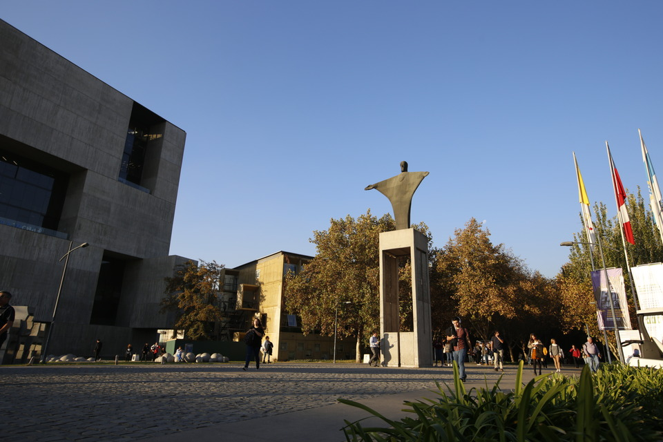

Ensamblaje, medición y formación de imágenes con un resonador magnético (MRI) de bajo costo en el Campus San Joaquín de la Pontificia Universidad Católica de Chile.

Planificación diaria y cronograma detallado de actividades prácticas y teóricas para la construcción del scanner ERNIE.
Objetivo del día: Ensamblar y medir el arreglo de Halbach.
Objetivo del día: Preparar una bobina de RF para obtener un decaimiento libre de la inducción (FID). Impresión de gradientes.
Objetivo del día: Conectar todos los sistemas individuales y obtener la primera señal de resonancia magnética (MRI).
Objetivo del día: Analizar los efectos de la variación de parámetros físicos y medir tiempos de relajación T1 y T2.
Objetivo del día: Programar secuencias completas de MRI y reconstruir las primeras imágenes bidimensionales (2D) de los fantomas.
Instrucciones claras para llegar al Campus San Joaquín y guías detalladas para localizar el laboratorio de resonancia magnética.
El taller se desarrollará en el segundo piso del edificio del Departamento de Ingeniería Eléctrica (Edificio 126 / San Agustín), específicamente en el Laboratorio de Low Cost MRI.
Toma la Línea 5 y desciende en la estación San Joaquín. La salida principal da directamente frente al acceso peatonal central del Campus San Joaquín (Vicuña Mackenna 4860).
Ingresa al campus y camina hacia el sector sur-oriente (hacia la derecha cruzando el patio central). Sigue los letreros hacia la Escuela de Ingeniería (Edificios Raúl Devés y San Agustín).
Ingresa al edificio del Departamento de Ingeniería Eléctrica. Sube las escaleras al segundo piso y dirígete al Laboratorio de Low Cost MRI en el pasillo principal.
Conduce por Av. Vicuña Mackenna con dirección al 4860 (Macul). El campus cuenta con estacionamientos controlados para visitas (acceso con pago de tarifa por minuto).
Se recomienda estacionar en el subterráneo del Complejo de Ingeniería Andrónico Luksic Abaroa o en las plazas de estacionamiento cercanas a las canchas deportivas del campus.
Puntos de venta de almuerzos, comida rápida y cafeterías disponibles dentro del campus San Joaquín.
Hall Universitario, Piso 1
La alternativa tradicional con menús de almuerzo diarios del día, opciones vegetarianas y platos caseros. Acepta pago con tarjeta Junaeb/BAES.
Hall Universitario, Piso 2
Variedad en colaciones rápidas, sándwiches calientes, ensaladas y postres en un ambiente cómodo del segundo piso del Hall.
Hall Universitario, Piso 1
Platos preparados listos para calentar y consumir, ensaladas gourmet frescas, wraps y opciones saludables con empaque reciclable.
Complejo Luksic, Nivel -1
Ofrece una experiencia gastronómica formal con servicio a la mesa, menús ejecutivos diarios y una cafetería integrada de autoservicio.
Aulas Pataguas / Cercano al Templo
Cadenas internacionales convenientes para snacks rápidos, sándwiches armados a tu gusto o café de especialidad y bollería.
Le informamos a los participantes que, si bien la organización del taller no cuenta con convenios o tarifas oficiales reguladas para los casinos externos del campus, el rango de precio promedio estimado por almuerzo o colación completa fluctúa usualmente entre los $6.000 y $10.000 pesos chilenos.
Consejos de conectividad, normas institucionales de seguridad y sugerencias turísticas para participantes extranjeros (Bolivia, Perú, entre otros).
Para evitar cobros excesivos por roaming internacional, se recomienda comprar un chip prepago local (de compañías como Entel, WOM o Movistar). Estos chips se pueden adquirir en quioscos, tiendas de conveniencia o en el aeropuerto por un costo aproximado de $2.000 a $5.000 CLP, y activarse recargando bolsas de datos a tarifas muy económicas.
A fin de resguardar sus pertenencias personales y evitar hurtos por sorpresa, le recomendamos encarecidamente evitar el uso o exhibición de teléfonos móviles, cámaras fotográficas y computadores personales en la vía pública o cerca de los accesos a estaciones de transporte público.
Es aconsejable planificar los traslados de regreso para realizarse antes de las 20:30 horas, y evitar transitar en solitario por calles secundarias o de poca iluminación a altas horas de la noche. Para traslados nocturnos, se recomienda utilizar aplicaciones de transporte registradas (Uber, Cabify, Didi) o solicitar servicios de radiotaxis oficiales.
Santiago cuenta con atractivos de gran interés turístico, accesibles de forma directa e integrada a través de la red del Metro de Santiago:
El mirador más alto de Sudamérica, ubicado en el edificio Gran Torre Santiago (Mall Costanera Center).
Cómo llegar: Metro Tobalaba (Línea 1 / Línea 4), combinación directa en Vicente Valdés desde el Campus.
Mirador panorámico de la cordillera y la cuenca de Santiago, accesible vía funicular o teleférico para una tarde al aire libre.
Cómo llegar: Metro Baquedano (Línea 1 / Línea 5) y caminar hacia el sector de Bellavista.
Un pintoresco sector de conservación histórica repleto de cafeterías de especialidad, tiendas de diseño local, anticuarios y restaurantes variados.
Cómo llegar: Metro Santa Isabel (Línea 5).
Visita el Palacio de La Moneda, la Plaza de Armas y la Catedral Metropolitana de Santiago para apreciar el patrimonio histórico nacional.
Cómo llegar: Metro Plaza de Armas (Línea 5).